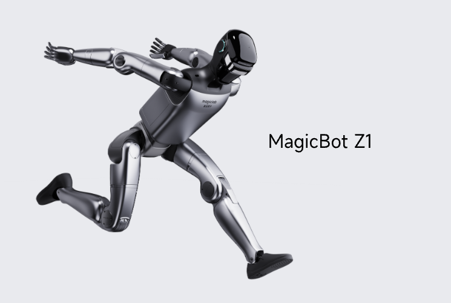

Humanoid · China · Watchlist · #57 R-Score rank
MagicBot Z1 Robot Profile
Scientific research, education, exhibitions, cultural tourism, commercial performance, and embodied AI development
Robot Snapshot
Core commercial and technical signals for MagicBot Z1.
Commercial Access
Purchase path, regional access, and import readiness.
Türkiye Market Access
Local sales path, distributor status, import readiness, and partner pipeline.
MagicBot Z1 facts
- Company
- MagicLab →
- Status
- High-dynamic bipedal humanoid robot
- Use case
- Scientific research, education, exhibitions, cultural tourism, commercial performance, and embodied AI development
- Height
- Official standing dimensions: 1369 x 422 x 200 mm
- Runtime
- Not disclosed
- Official source
- Open official source →
Robologai view
MagicBot Z1 is tracked as a Humanoid robot for Scientific research, education, exhibitions, cultural tourism, commercial performance, and embodied AI development. Robologai scores it by maturity, deployment signal, price clarity, media proof, and official source strength.
61/100 Watchlist
Maturity 3/5
Price clarity 1/5
Commercial 45
Mobility 86
AI signal 86
Watchlist
Readiness Breakdown
How Robologai scores MagicBot Z1 across market-readiness signals.
Data Quality
Source confidence, pricing clarity, and deployment proof.
Source Notes
MagicBot Z1 source trail.
Deployment Context
What MagicBot Z1 signals about the physical AI market.
Compare Next